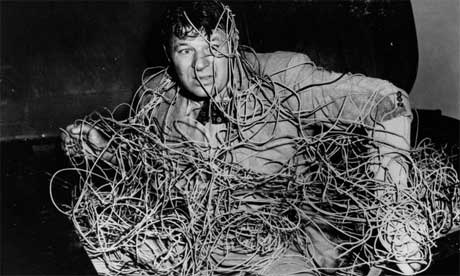

Hardwarová divergence
mDevCamp, 26. květen 2012
Filip Hráček, Google ČR
Hardwarová konvergence
Dějství I.

Jedna skříňka v obýváku.
Dějství II.

Jedna skříňka v kapse.
Dějství III.

Cloud.
Konvergence → Divergence

ONE SIZE DOES NOT FIT ALL
{people|purposes}
A bude hůř


.
.
.
Android řeší od počátků
V rámci možností, ale systémově.


Divergence
↓
Demokratizace
↓
Více příležitostí pro menší hráče

Díky!
Filip Hráček, Google ČR